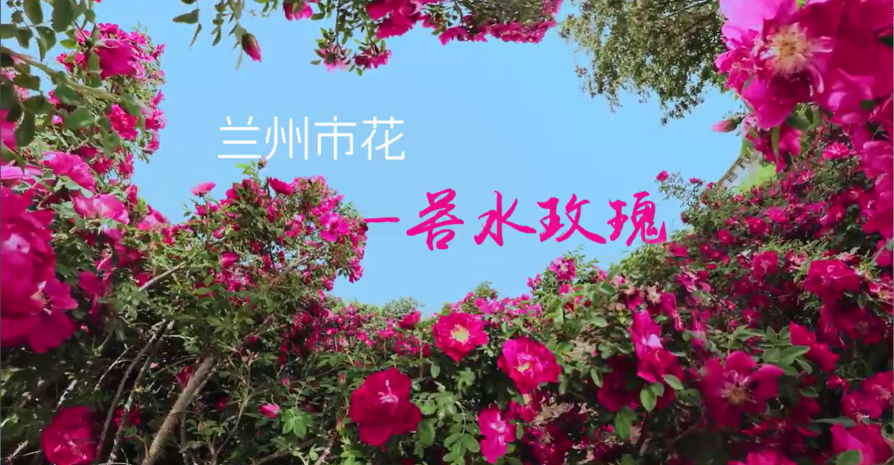

永登县，位于甘肃兰州西北角，是河西走廊入口之要塞，青藏高原与黄土高原在这里 交汇，海拔在1590米到3650米之间。永登县境内有盆地、河谷、丘陵、山地、草原等多种 形态，呈“三川夹两河”地貌，即八宝川、庄浪川、秦王川和大通河、庄浪河。这里拥有长 时段的日照与极强的昼夜温差，数亿年时光造就的万千沟壑中生长着一丛丛鲜艳的苦水玫 瑰。庄浪河自古流经苦水镇，为这座小镇后来孕育苦水玫瑰奠定了基础。两百多年前的一 天，苦水玫瑰第一次带着明艳的色彩与饱满的香气出现在苦水镇。一开始，当地人将苦水 玫瑰花瓣与砂糖混合制成玫瑰糖，玫瑰糖用作调味品。而如今苦水玫瑰已经由零星种植转 向连片化发展，成为了老百姓的衣食父母与当地的特色产业。


- 
<
>
✨品牌简介
地域特色
三农建设
本项目以永登县当地的特色农产品苦水玫瑰为切入点，深度融合乡村振兴战略，依托电子 商务为平台整合农民增收、农村经济和农业种植。项目创造性地将农村电商平台与乡村振 兴相结合，突破了传统的销售模式。
品牌理念
项目注重打造苦水玫瑰与浪漫的结合的新名片，同时融入坚韧不拔、质朴乐观的西北 精神，将苦水玫瑰的精神内核推向大众视野。除了传统的苦水玫瑰干花、精油、花茶等 产品，我们团队将开发一系列产品（如玫瑰酒、玫瑰香薰、特色礼盒等）与结合地方特 色（如丹霞地貌）推出一系列文创产品。提升产品的知名度与附加值。同时我们的包装 将采用可降解的纸质包装袋，减少塑料的使用，提升品牌的形象，体现环境友好型的理念。
【热销爆款｜苦水玫瑰系列推荐】
苦水玫瑰精油：千年古乡精粹，滴滴凝练高原玫瑰芬芳，舒缓身心、焕活肌肤，天然纯净的“液体黄金”。
苦水玫瑰酒：古法酿制，玫瑰与粮食的浪漫邂逅，柔润甘醇中滋养气血，微醺养颜两相宜。
苦水玫瑰茶：头茬花冠低温锁鲜，冲泡一盏花香四溢，疏肝解郁、润肤养颜，女性四季滋养必备。
✨ 匠心臻品，自然馈赠 —— 从精油到茶酒，苦水玫瑰以传统工艺与天然活性，为您打造从内到外的优雅健康体验！
玫瑰精油
源自中国甘肃苦水镇千年玫瑰古乡，以高原重瓣红玫瑰为 原料，经传统工艺精心萃取，蕴含浓郁花香与天然活性成 分，可舒缓情绪、滋养肌肤，天然芬芳赋予身心纯净呵护。
玫瑰酒
以苦水重瓣红玫瑰与优质粮食为原料，经古法发酵陈酿而成 ，酒体澄澈透亮，入口绵柔甘润，玫瑰香气馥郁悠长，兼 具微醺雅趣与养颜活血之效，是养生与品味的诗意结合。
玫瑰茶
精选苦水镇头茬重瓣红玫瑰花冠，低温烘干锁住天然色泽 与活性，冲泡后花香清雅、汤色透亮，入口甘甜回韵，常饮 可疏肝解郁、润肤养颜，是女性日常滋养的天然草本佳饮。
客户评价
玫瑰精油质量超乎想象，香味持久自然，皮肤吸收很快，绝对会回购！
2023年8月15日
玫瑰茶喝起来非常温润，每天下午泡一杯，感觉整个人的气色都变好了。
2023年8月12日
玫瑰酒口感独特，送礼自用都很合适，包装也很精美，推荐！
2023年8月10日